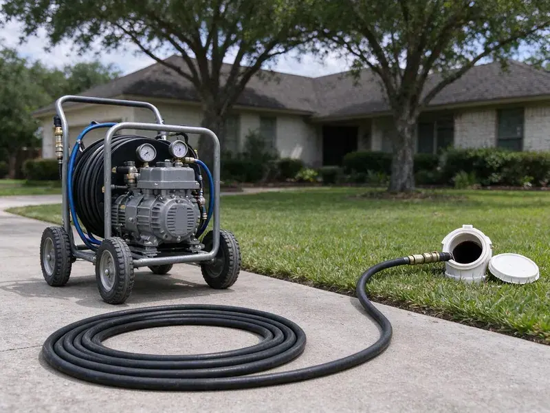

Hydro Jetting in Miami Gardens, FL
Hydro jetting in Miami Gardens, FL clears grease, roots and scale that a snake leaves behind.
- Same-Day Jetting Slots
- Residential and Commercial Units
- Fewer Repeat Clogs
- Before and After Video

Need Deep Drain Cleaning in Miami Gardens, FL?
Call HDF Plumbing and we will look at the pipe first, then quote the jetting.
Hydro Jetting for Houses and Shops in Miami Gardens, FL
HDF Plumbing runs a camera before every jetting job. That sets the pressure. With the pipe on screen, we can pick settings that clean the line fully and still protect older or fragile material.
Some of what we do:
- Rotating, root-cutting and penetrating nozzle selection
- Jetting for 1-1/2 inch to 6 inch lines
- Grease, scale and root removal

Additional Drain Services Services in Miami Gardens, FL
From stubborn kitchen clogs to main sewer backups, our drain services in Miami Gardens, FL clear the line and keep it clear with camera-verified results.


Customers
Why Choose HDF Plumbing for Hydro Jetting in Miami Gardens, FL?
Snaking restores some flow. Jetting restores the pipe. Cleaning the line to near-original condition means it can carry full flow again, which cuts down on the frequent clogs and costly repairs that come from a pipe that never gets fully clean.
- Grease and Sludge, Jetting is the right way to clear heavy grease from kitchen and restaurant lines.
- Full-Wall Clean, Jetting cleans the entire pipe wall, not just a path through the clog.
- Root Cutting, Root-cutting nozzles cut through fine roots and flush them out of the sewer.
Citywide Coverage
No part of Miami Gardens is too far for a jetting call. Crews work all over town. Spreading our jetting units across the area keeps arrival times short, even for stubborn clogs that need attention the same day.
Experienced Team
Every tech stays current on jetting methods. Training never stops. They learn new nozzle types and safety practices as the equipment changes, so the diagnosis and the cleaning are both done correctly on your line.
Safety-First Approach
High-pressure water can injure people if misused. Our techs wear protective gear. We secure every access point and keep hands away from the nozzle so no one gets hurt and no water sprays into the house.
Trusted Certified Miami Gardens Plumbing Services Professionals
At HDF Plumbing, we are proud to offer certified plumbing services throughout Miami Gardens, FL. Those papers on the wall mean something. Our plumbers hold recognized industry credentials, and they follow strict safety and quality rules on every repair, installation and maintenance call we run.
Call Us Now PHCC Plumbing Contractor Recognition
PHCC Plumbing Contractor Recognition Better Business Bureau (BBB) Accreditation
Better Business Bureau (BBB) Accreditation Angi Certified Pro
Angi Certified Pro ISO 9001 Quality Management Certification
ISO 9001 Quality Management CertificationHigh-Pressure Jetting Services in Miami Gardens, FL
High-Pressure Water Jetting for Drain Cleaning in Miami Gardens
Our jetters run up to 4,000 PSI. It is enough to split hardened grease. Water at that pressure scours the pipe wall clean without chemicals, and it works on PVC, cast iron and clay when the pressure is set for the material and the condition of the pipe.

Emergency Hydro Jetting Services in Miami Gardens, FL
A full sewer backup needs fast help. We bring the jetter to you. After-hours techs carry a jetter, a camera and cleanup gear, ready to open the line and limit water damage.
Root Cutting With Hydro Jetting in Miami Gardens
Specialty nozzles slice fine roots. Root hairs slip past a saw. Jetting removes root hairs left by a cable and exposes each joint where roots get in, which shows up clearly on camera, which helps you weigh lining against a spot repair.
Main Sewer Line Hydro Jetting in Miami Gardens
Every drain in the house empties into the main. A clog there stops them all. Roots from nearby trees are the usual cause, and a jetter cuts them out and flushes the line clean to the street.
Preventative Maintenance Hydro Jetting in Miami Gardens, FL
Scheduled jetting heads off emergencies. It is cheaper than a backup. For properties with a history of drain trouble, removing scale and grease before they close the pipe extends the life of the line and keeps drainage steady from one year to the next.
Kitchen Line Grease Jetting in Miami Gardens, FL
Grease clings and hardens. Flat runs are the worst. Jetting melts and scrubs that buildup away instead of poking a hole through it, using smaller hose and nozzles sized for 1-1/2 and 2 inch kitchen lines, so your sink and dishwasher drain properly for much longer.
Older Home Drain Jetting in Miami Gardens
Older homes collect decades of buildup. Grease and soap scum lead. We use nozzles that work through the bends in your pipes and clear years of buildup, at pressures that are safe for most residential plumbing and with nothing but water going down the drain.

Restaurant and Hotel Jetting in Miami Gardens, FL
Restaurants and hotels build grease fast. Restrooms clog too. Our heavy-duty commercial jetters clear grease and food waste from kitchen lines and restroom laterals while keeping downtime short, and regular service helps prevent interruptions during peak hours.
Hydro Jetting Near Me in Miami Gardens, FL
Being local means we know the housing stock. Clay and cast iron need a gentler setup. We know which neighborhoods have older cast iron or clay and which have newer PVC, which helps us choose safe pressure settings and the right nozzle every time.
A search for hydro jetting near me usually means a clog keeps coming back. We fix that. A single visit covers the inspection, the jetting and the follow-up camera run, with footage you can keep.
HDF Plumbing at a Glance
- Fully licensed plumbing team covering Miami Gardens, FL
- Same-day appointments and 24/7 emergency response
- Upfront, flat-rate pricing before work begins
- 4.9-star rated by 739+ Florida customers
Miami Gardens Map
Miami Gardens Information
- Population
- 110,717
- Area codes
- 786/305/954
- Service area
- Miami Gardens and towns within a 40 mile drive
- Nearby
- Country Club, North Miami, Miramar, Hialeah
Scale bonds with kitchen grease inside the pipe, so jetting is often the best way to get an older line in Miami Gardens, FL back to full flow. Water across much of Florida comes from limestone aquifers and runs hard, leaving heavy scale on fixtures and inside water heaters.
Talk to a Plumber
Reach out to HDF Plumbing for reliable plumbing work done by licensed pros in Miami Gardens, FL.
Our Specialized Plumbing Services in Miami Gardens, FL
At HDF Plumbing, we handle the full list of plumbing services across Miami Gardens, FL. From leak detection to full system installs, our team works fast and charges fair prices on homes and commercial properties alike. Take a look at our core services below:


How It Goes When We Jet a Line in Miami Gardens, FL
Inspect, jet, verify. That is the order every time.
Call to Schedule
Call (904) 925-7356 and describe the clogs you are seeing. A few questions tell us what to bring.
Camera Inspection
Your tech runs a camera to check the pipe and find the blockage. That confirms jetting is safe for your pipe.
Jet the Line
We feed the hose into the line and scour the walls in passes. Grease, roots and scale come out with the water.
Frequently Asked Questions About Hydro Jetting in Miami Gardens
Most jetting jobs in Miami Gardens, FL run $300 to $800. Line length and access set the price. Main sewer descaling or heavy root removal sits at the high end, while a short kitchen line from an easy cleanout sits near the low end of that range, and you get a quote after the camera inspection.
Residential drains: 1 to 2 hours. Mains take longer. Expect 3 to 4 hours on a big sewer or commercial line, longer if the buildup is heavy or access is tight.
Yes, on our workmanship. The length varies. The warranty term depends on the service and the condition of the pipe, and we go over all the details with you before starting any work on the line.
For sound pipe, yes. Damaged pipe is different. We inspect every line on camera before jetting, because a pipe that is already failing can break under pressure.
Gorlitz, Spartan Tool and MyTana. All professional grade. We use these brands because they handle heavy blockages and long days without letting us down.
Snaking uses a rotating cable to break through a clog. Jetting uses pressurized water to clean the entire pipe wall and flush debris away.
Snaking punches a hole. Jetting cleans the pipe. Snaking restores some flow, but jetting removes the buildup entirely and keeps the line clear longer.
Every 1 to 3 years for most homes. Busy kitchens are a different story. A home with past problems does well every year or two, and a commercial kitchen may need it every few months.
What People Are Saying About Our Plumbing Experts?

Lisa C.
Water was pouring out from under the washing machine on a holiday weekend. HDF Plumbing talked me through closing the valves over the phone and had a plumber at the house within ninety minutes. It was a burst fill hose.
Emergency Plumbing · Pembroke Pines, FL
Monica A.
Our water bill nearly doubled in one month with no change in how we used water. The tech checked the meter, heard the leak under the hallway with his equipment, and opened a hole about a foot square. Fixed the same day.
Slab Leak Repair · North Miami, FLRachel N.
Hard water was leaving white crust on every faucet and our dishwasher was struggling. The tech tested the water, recommended a softener sized for a family of five, and installed it with a bypass valve in one afternoon. The spots on our glasses are gone.
Water Softener · Hialeah, FL
Patricia H.
We had a slab leak that two other companies could not find. HDF Plumbing located it in under an hour with a listening device. They rerouted the line through the attic instead of breaking up the floor, so we kept our kitchen tile.
Slab Leak Repair · Hollywood, FLJessica T.
We were adding a gas range in a kitchen remodel and needed a new line run from the meter. The plumber pulled the permit, ran the pipe through the crawl space, and had it inspected and approved within the week.
Gas Line Repair · North Miami, FL
Nathan E.
Our tankless heater kept throwing an error code and shutting off mid shower. The tech flushed the heat exchanger, which was full of scale, and replaced a bad flow sensor. Hot water has been steady for half a year now.
Water Heater Repair · Hollywood, FL